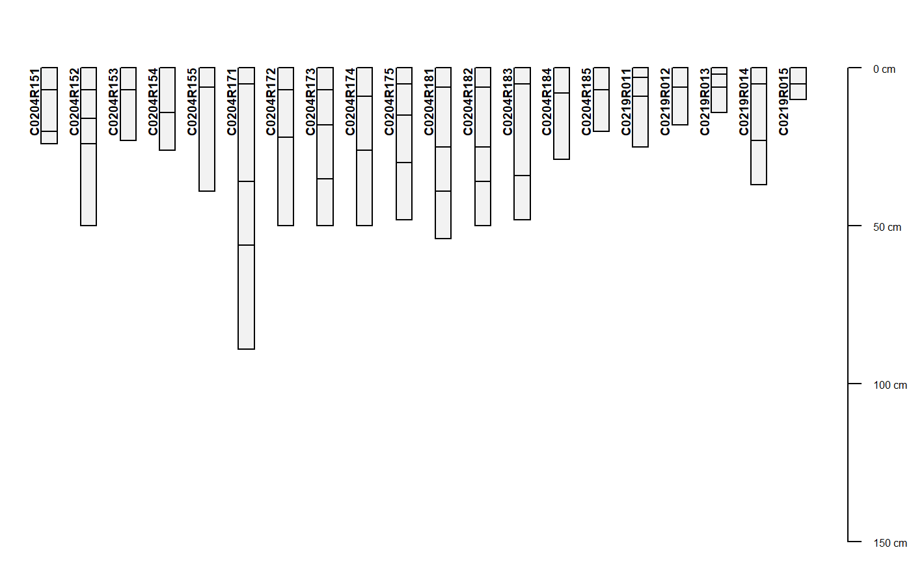

Get Rapid Carbon Assessment (RaCA) data by state, geographic bounding-box, RaCA site ID, or soil series query from the SoilWeb API. This interface to the data was an experimental delivery service that does not include the latest soil carbon measurements.
Please use current RaCA distribution if you need measured SOC.
This interface will be updated sometime calendar year 2021 to include the latest soil morphology, taxonomic classification, and measured SOC values. More detailed coordinates for sample sites should also be available.
fetchRaCA( series = NULL, bbox = NULL, state = NULL, rcasiteid = NULL, get.vnir = FALSE )
| series | a soil series name; case-insensitive |
|---|---|
| bbox | a bounding box in WGS84 geographic coordinates e.g. |
| state | a two-letter US state abbreviation; case-insensitive |
| rcasiteid | a RaCA site id (e.g. 'C1609C01') |
| get.vnir | logical, should associated VNIR spectra be downloaded? (see details) |
pedons:a SoilProfileCollection object containing site/pedon/horizon data
trees:a data.frame object containing tree DBH and height
veg:a data.frame object containing plant species
stock:a data.frame object containing carbon quantities (stocks) at standardized depths
sample:a data.frame object containing sample-level bulk density and soil organic carbon values
spectra:a numeric matrix containing VNIR reflectance spectra from 350--2500 nm
The VNIR spectra associated with RaCA data are quite large (each gzip-compressed VNIR spectra record is about 6.6kb), so requests for these data are disabled by default. Note that VNIR spectra can only be queried by soil series or geographic BBOX.
https://www.nrcs.usda.gov/wps/portal/nrcs/detail/soils/survey/?cid=nrcs142p2_054164
D.E. Beaudette, USDA-NRCS staff
# \donttest{ if(requireNamespace("curl") & curl::has_internet()) { if(require(aqp)) { # search by series name s <- fetchRaCA(series='auburn') # search by bounding-box # s <- fetchRaCA(bbox=c(-120, 37, -122, 38)) # check structure str(s, 1) # extract pedons p <- s$pedons # how many pedons length(p) # plot par(mar=c(0,0,0,0)) plot(p, name='hzn_desgn', max.depth=150) } } #> Site coordinates have been truncated to 2 decimal places, contact the National Soil Survey Center for more detailed coordinates. #> Carbon concentration and stock values are probably wrong, or at least suspect. USE WITH CAUTION. #> converting horizon IDs in column `phiid` to character #> 4 RaCA sites loaded (0.07 Mb transferred) #> List of 6 #> $ pedons :Formal class 'SoilProfileCollection' [package "aqp"] with 9 slots #> $ trees : NULL #> $ veg :'data.frame': 4 obs. of 6 variables: #> $ stock :'data.frame': 20 obs. of 13 variables: #> $ sample :'data.frame': 76 obs. of 16 variables: #> $ spectra: NULL  # }